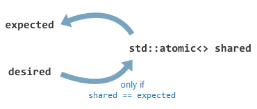
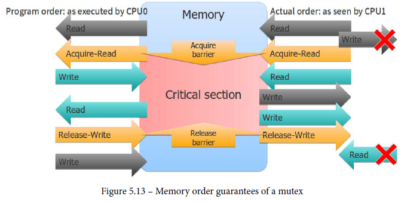
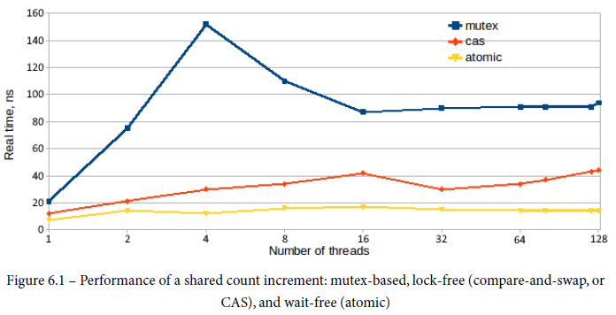

std::atomicstd::atomicatomic operation is an operation that is guaranteed to execute as a single transaction
Any trivially copyable type can be made atomic. What is trivally copyable?
memcpy)#include <atomic>
std::atomic<int> x{0}; // not okay: x = 0; okay: x(0);
std::atomic<double> y; // okay
struct S { long x; long y};
std::atomic<S> s; // okay
++x; // atomic pre-increment
x++; // atomic post-increment
x += 1; // atomic increment
x |= 1; // atomic bitset
//x *= 2; // No atomic multiplication
int y = x * 2; // atomic read of x
x = y + 1; // atomic write of x
x = x + 1; // the whole expression is not atomic!! it is an atomic read followed by an atomic write
Operations supported on std::atomic<T>
load()/store()) for all types (build-in and user-defined)exchange(), compare_exchange_weak(), compare_exchange_strong()std::atomic is not always lock-free
std::atomic<T>::is_lock_free() to check at runtime. This is done at runtime due to alignment, some platforms have alignment requirement for lock free.is_always_lock_free() at compile time.// below types, std::atomic<T>::is_lock_free() return true;
long x;
struct A { long x; };
struct B { long x; long y; }; // 16-bytes atomic move to %mmx
struct C { long x; int y; }; // 16-bytes (with padding)
// below types, std::atomic<T>::is_lock_free() return false;
struct D { int x; int y; int z; }; // 12 bytes, not lock_free
struct E { long x; long y; long z;}; // larger than 16 bytes type, x86 doesn't have atomic instruction operating on types larger than 16 bytes.
https://preshing.com/20150402/you-can-do-any-kind-of-atomic-read-modify-write-operation/
Atomic read-modify-write operations – or “RMWs” – let you read from a variable in shared memory and simultaneously write a different value in its place. In the C++11 atomic library, all of the following functions perform an RMW:
Out of all the available RMW operations in C++11, the only one that is absolutely essential is compare_exchange_weak. Every other RMW operation can be implemented using that one.
compare_exchange_weak will sometimes false (spurious), so use it in a loopcompare_exchange_weak() and compare_exchange_strong() generates same instruction.compare and swap conceptually an atomic execution of
bool atomic<T>::compare_exchange_strong(T& expected, T desired) {
if (this->value == expected) {
this->value = desired; return true;
}
else {
expected = this->value; return false;
}
}

compare_exchange_* can have two memory ordering parameters. You can conceptually think of it like below
bool compare_exchange_strong(T& expected, T desired, memory_order on_success, memory_order on_failure) {
T tmp = value.load(on_failure); // on_failure: memory ordering for the load operation if the comparison fails.
if (tmp != expected) {
expected = tmp; return false;
}
Lock L; // now get exclusive access
tmp = value; // load value again, value could have changed. Same idea of double-checking lock
if (tmp != expected) {
expected = tmp; return false;
}
value.store(desired, on_success); // on_success: memory ordering for the read-modify-write operation if the comparison succeeds.
return true;
}
Implement spin lock with CAS
class spin_lock
{
constexpr int UNLOCKED = 0;
constexpr int LOCKED = 1;
std::atomic<int> m_value = 0;
public:
void lock()
{
while (true)
{
int expected = UNLOCKED;
if (m_value.compare_exchange_strong(expected, LOCKED))
break;
}
}
void unlock()
{
m_value.store(UNLOCKED);
}
};
Another way (test_and_set, TAS)
class SpinLock
{
private:
std::atomic_flag _lockFlag;
public:
SpinLock()
: _lockFlag {ATOMIC_FLAG_INIT}
{ }
void lock()
{
while(_lockFlag.test_and_set(std::memory_order_acquire))
{ }
}
bool try_lock()
{
return !_lockFlag.test_and_set(std::memory_order_acquire);
}
void unlock()
{
_lockFlag.clear();
}
};
test_and_set operates on a bit, compare_exchange_* operates on a 32-bit field. test_and_set maybe cheaper to implement than compare_exchange on some platforms
Another version of TAS
class TasSpinLock
{
public:
ALWAYS_INLINE void Enter()
{
// atomic_bool::exchange() returns previous value of Locked
while (Locked.exchange(true, std::memory_order_acquire) == true);
}
ALWAYS_INLINE void Leave()
{
Locked.store(false, std::memory_order_release);
}
private:
alignas(CACHELINE_SIZE) std::atomic_bool Locked = {false};
};
static_assert(sizeof(TasSpinLock) == CACHELINE_SIZE, "");
TAS spinlock doesn’t scale well, a good article about how to improve it: https://geidav.wordpress.com/2016/03/23/test-and-set-spinlocks/
Two main issues:
std::atomic_bool::exchange() always invalidates the cache line Locked resides in, regardless of whether it succeeded in updating Locked or not. ⇒ use test-TAS patternA minimal (correct) implementation of mutex:
class mutex {
std::atomic<bool> flag{false};
public:
void lock()
{
while (flag.exchange(true, std::memory_order_relaxed));
std::atomic_thread_fence(std::memory_order_acquire);
}
void unlock()
{
std::atomic_thread_fence(std::memory_order_release);
flag.store(false, std::memory_order_relaxed);
}
};
The mutexes have (at least) two atomic operations inside.

The pair of barriers, acquire and release, act as borders for the section of the code sandwiched between them. This is known as the critical section
The C++14 standard has five mutex types:
The variants with "timed" in the name are the same as those without, except that the lock operations can have time-outs specified, to limit the maximum wait time. If no time-out is specified (or possible) then the lock operations will block until the lock can be acquired — potentially forever if the thread that holds the lock never releases it.
C++ Standard defines a triplet of class templates for objects that hold a lock. These are:
std::lock_guard<>std::unique_lock<>std::shared_lock<>For basic operations, they all acquire the lock in the constructor, and release it in the destructor, though they can be used in more complex ways if desired.
std::unique_lock<> is similar, except
std::shared_lock<> is almost identical to std::unique_lock<> except that it acquires a shared lock on the mutex.For more details about std::lock_guard vs std::unique_lock, refer to: https://www.justsoftwaresolutions.co.uk/threading/multithreading-in-c++0x-part-5-flexible-locking.html
A trick for conditional atomic check: https://www.justsoftwaresolutions.co.uk/threading/simplify_code_by_encapsulating_locks.html
// Original code
lock_acquire(lock);
while(check_condition()){
lock_release(lock);
//do any actual work in the iteration - Thanks to Caleb for this comment
lock_acquire(lock);
}
lock_release(lock);
// Transformed code
bool atomic_check_condition()
{
std::lock_guard<mutex_type> guard(lock);
return check_condition()
}
while(atomic_check_condition()){
//do any actual work in the iteration - Thanks to Caleb for this comment
}
// C++17 if with initialization
if (std::lock_guard<std::mutex> guard(mx_); check_condition()) {
//do any actual work in the iteration
}
std::mutex m;
size_t count;// Guarded by m
… on the threads …
{
std::lock_guard l(m);
++count;
}
Problems with locks
A wait-free implementation is usually possible only for very simple operations (such as incrementing a count)
std::atomic<size_t> count;
… on the threads …
++count;
or
std::atomic<size_t> count;
… on the threads …
count.fetch_add(1, std::memory_order_relaxed);
std::atomic<size_t> count;
… on the threads …
size_t c = count.load(std::memory_order_relaxed);
while (!count.compare_exchange_strong(c, c + 1,
std::memory_order_relaxed, std::memory_order_relaxed)) {}
This lock-free approach can be generalized to any computation: instead of c + 1, we could use any other expression, and the program would work the same way.

Optimization version: Test and CAS
class Spinlock {
public:
void lock() {
// Test and CAS
while (flag_.load(std::memory_order_relaxed) ||
flag_.exchange(1, std::memory_order_acquire)) {}
}
void unlock() { flag_.store(0, std::memory_order_release); }
private:
std::atomic<unsigned int> flag_;
}
The optimization here is that we first read the flag until we see 0, then we swap it with 1. When pre-checking the flag, we don't care about the memory barrier at all since the final definitive check is always done using the exchange and its memory barrier.
Instead of a generic flag, we can make the lock itself be the only reference to the object it is guarding. The atomic variable is going to be a pointer.
template <typename T>
class PtrSpinlock {
public:
explicit PtrSpinlock(T* p) : p_(p) {}
T* lock() {
while (!(saved_p_ =
p_.exchange(nullptr, std::memory_order_acquire))) {}
}
void unlock() {
p_.store(saved_p_, std::memory_order_release);
}
private:
std::atomic<T*> p_;
T* saved_p_ = nullptr;
};
A semaphore is a very relaxed type of lockable object. A given semaphore has a predefined maximum count, and a current count. You take ownership of a semaphore with a wait operation, also referred to as decrementing the semaphore, or even just abstractly called P. You release ownership with a signal operation, also referred to as incrementing the semaphore, a post operation, or abstractly called V. The single-letter operation names are from Dijkstra's original paper on semaphores.
Every time you wait on a semaphore, you decrease the current count. If the count was greater than zero then the decrement just happens, and the wait call returns. If the count was already zero then it cannot be decremented, so the wait call will block until another thread increases the count by signalling the semaphore.
Every time you signal a semaphore, you increase the current count. If the count was zero before you called signal, and there was a thread blocked in wait then that thread will be woken. If multiple threads were waiting, only one will be woken. If the count was already at its maximum value then the signal is typically ignored, although some semaphores may report an error.
Whereas mutex ownership is tied very tightly to a thread, and only the thread that acquired the lock on a mutex can release it, semaphore ownership is far more relaxed and ephemeral. Any thread can signal a semaphore, at any time, whether or not that thread has previously waited for the semaphore.
The C++ standard does not define a semaphore type. You can write your own with an atomic counter, a mutex and a condition variable if you need, but most uses of semaphores are better replaced with mutexes and/or condition variables anyway.
Couple notes for the implementation below:
notify_one comes after the data is pushed on the internal queue. This avoids the waiting thread being notified if the call to the_queue.push throws an exception.wait_and_pop, and everything works fine. If the queue is empty, then each thread in turn will block waiting on the condition variable. When a new entry is added to the queue, one of the threads will wake and take the value, whilst the others keep blocking. If more than one thread wakes (e.g. with a spurious wake-up), or a new thread calls wait_and_pop concurrently, the while loop ensures that only one thread will do the pop, and the others will wait.template<typename Data>
class concurrent_queue
{
private:
std::queue<Data> the_queue;
mutable boost::mutex the_mutex;
boost::condition_variable the_condition_variable;
public:
void push(Data const& data)
{
boost::mutex::scoped_lock lock(the_mutex);
the_queue.push(data);
lock.unlock(); // 4
the_condition_variable.notify_one(); //3
}
// Modern c++ way
void push_back(T t)
{
{
std::lock_guard<std::mutex> guard(m);
q.push(t);
}
c.notify_one();
}
bool empty() const
{
boost::mutex::scoped_lock lock(the_mutex);
return the_queue.empty();
}
bool try_pop(Data& popped_value)
{
boost::mutex::scoped_lock lock(the_mutex);
if(the_queue.empty())
{
return false;
}
popped_value=the_queue.front();
the_queue.pop();
return true;
}
void wait_and_pop(Data& popped_value)
{
boost::mutex::scoped_lock lock(the_mutex);
while(the_queue.empty()) // 2
{
the_condition_variable.wait(lock); // 1
}
popped_value=the_queue.front(); // 5
the_queue.pop();
}
// modern C++ way
T pop_front()
{
std::unique_lock<std::mutex> guard(m);
c.wait(guard,[=]{return !q.empty();});
auto ret=q.front();
q.pop();
return ret;
}
};
& capacity-1 when accessing the node in push/pop0xfffffff & capacity-1 = 0xffff0x0 & capacity - 1 = 0uint32 read;
uint32 write;
mask(val) { return val & (array.capacity - 1); }
push(val) { assert(!full()); array[mask(write++)] = val; }
pop() { assert(!empty()); return array[mask(read++)]; }
empty() { return read == write; }
full() { return size() == array.capacity }
size() { return write - read; }